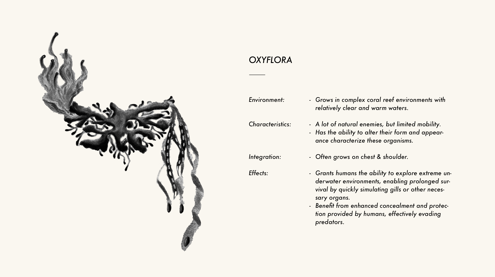
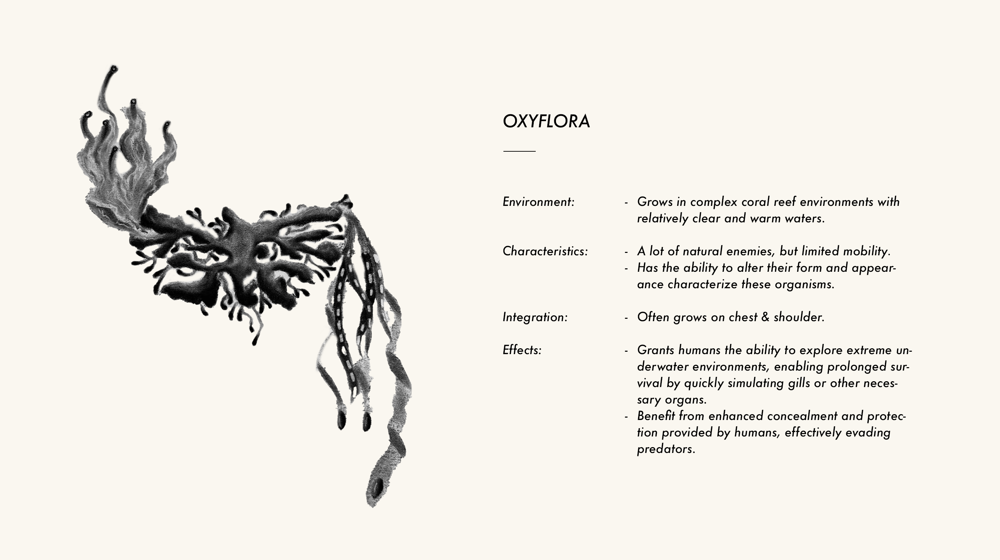

Have you ever thought about the underwater world of the future?

In a future where oceans cover ninety-five percent of the planet, humanity is forced to reinvent itself, adapting to life beneath the sea. A new civilization thrives in the deep, where humans no longer stand apart from nature but live in continuous exchange with it. Here, organisms and humans intertwine in symbiotic relationships that blur the distinction between species. These marine beings function like external “organs,” merging with the human body to extend its capabilities while drawing nourishment and protection in return. This underwater world is not a tale of domination, but of reciprocity — a vision of life redefined through balance, equality, and coexistence.
Organisms Utopia is a speculative design project — a hypothetical vision rather than a scientific prototype. It does not aim to predict technology, but to use design fiction to provoke reflection. By imagining a world where survival depends on symbiosis instead of control, the project invites us to reconsider humanity’s relationship with other life forms. Returning to the ocean — the cradle of all life — this work asks a simple yet profound question: what might it mean to be human if equality across species became our foundation?
Organisms Utopia unfolds as a speculative design project that uses wearable art as a medium to explore new paradigms of symbiosis. Instead of aiming for scientific accuracy, the project constructs a fictional ecology where organisms and humans evolve together beneath the ocean, prompting reflection on how such coexistence could reshape our definitions of life and interdependence.
Within this imagined world, marine organisms emerge from diverse habitats — coral reefs, deep trenches, kelp forests, and open waters. Each carries distinctive traits that grant oceanic humans new sensory or functional abilities, while drawing nourishment and shelter from the human body in return. These relationships are not simply parasitic or utilitarian; they represent an alternate vision of reciprocity and equality across species.
To materialize this vision, the project employs experimental making methods such as 3D printing, heat-shrinkable materials, and UV resin. The resulting wearable artifacts — designed for the head, shoulders, arms, and hands — act as proxies for speculative organisms. Some integrate sensors to simulate touch or environmental response, inviting the audience to imagine how it might feel to host or embody another life form. Through these crafted experiences, Organisms Utopia seeks to provoke dialogue about our future entanglement with the living world.
The project positions itself within the field of speculative design, where fiction is used as a tool to question present realities and imagine alternative futures. Organisms Utopia does not aim to model scientific truth; instead, it borrows inspiration from marine biology, parasitic systems, and ecological principles to create a sense of plausibility. This approach, often referred to as “fictional prototyping,” allows design to operate as a form of inquiry: not to predict what will happen, but to ask what if and to explore the cultural and ethical implications of such possibilities.
By weaving together fragments of science, design, and narrative, the methodology emphasizes the role of design as a catalyst for reflection. In this way, the project situates itself not as a forecast of technological progress, but as a platform for dialogue about how humanity might reimagine its relationship with other life forms.
Here is the inception of my ideas: initial sketches that mark the beginning of my creative journey.
Below are sketches and profiles of four envisioned future marine organisms.
 



Below are conceptual 3D models of four future marine organisms, along with renderings depicting their symbiotic integration with humans.


Below is a conceptual map illustrating the primary habitat distributions of four envisioned future marine species.

Sustainability is prioritized in the "Organisms Utopia" project through the consideration of material selection, production processes, and design lifecycle. Sustainable materials such as biodegradable polymers or recycled plastics are selected for 3D printing to mitigate resource dependency and minimize environmental footprint. Also, wearable art pieces are designed for durability and flexibility, adapting to diverse needs. Through these efforts, we aim to minimize our project's ecological footprint and contribute to a sustainable future.
In the evolution of the "Organisms Utopia" project, we've established collaborations with experts in the fields of biology and environmental science. They offered invaluable insights into marine biology and ecosystems, aiding our design team in comprehending the behavior, traits, and ecological context of underwater organisms, as well as essential information on parasitic relationships, symbiotic relationships, and biodiversity. This collaboration has guided the development of wearable art pieces, seamlessly integrating the authenticity of real-world ecological systems into our speculative design. Through our partnership with the fields of biology and environmental science, the "Organisms Utopia" project is poised to more accurately portray the vision of a future utopia, thus prompting profound reflections on future utopian symbiotic coexistence.
The symbiotic model introduced in the "Organisms Utopia" project is intended to evoke deep contemplation and reassessment of the interconnectedness between humanity and other organisms. Delving into this symbiotic paradigm would compel a profound reflection on the essence, significance, and potential evolution of life, also foster a profound sense of awe and responsibility towards life, urging a reexamination of the roles and contributions humanity should undertake within Earth's ecosystem.
Life transcends mere individual existence; it extends beyond personal relationships to encompass the delicate balance and stability of the entire ecosystem. As part of the ecosystem, humanity should play a role that is responsible and humble. Humans have a duty to protect and preserve the planet's biodiversity and ecosystems to ensure sustainable development for the future. This entails respecting the power and influence of nature and striving to coexist harmoniously with it, rather than attempting to dominate and control it. By recognizing and honoring nature's intrinsic value, humans can establish a symbiotic relationship with the natural world, thus contributing to the maintenance of the balance and stability of Earth's ecosystems.
The challenges of the real world compound the complexity of realizing the utopian vision where humanity and nature coexist harmoniously, mutually dependent within an ideal ecosystem. Whether humanity can progressively establish symbiotic relationships with nature in the future through collective efforts such as shifting values, embracing sustainable practices, and leveraging technological innovation remains uncertain. However, what is certain is that our contemplation and yearning for this utopian future will undoubtedly underpin a more balanced and harmonious coexistence between humans and nature. As designers, we consistently act as trailblazers along this trajectory...